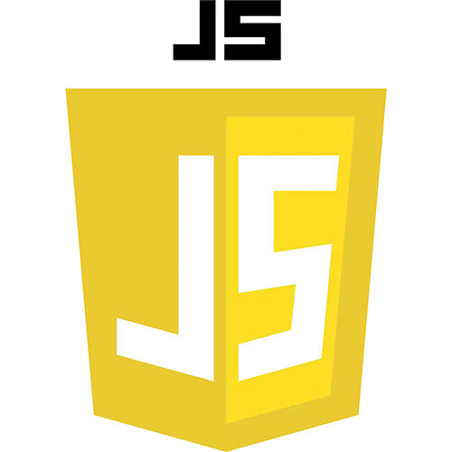

HTML (HyperText Markup Language) — это язык разметки, используемый для создания структуры веб-страниц. С помощью HTML можно добавлять заголовки, абзацы, изображения, ссылки и другие элементы на страницу. HTML не является языком программирования; это язык разметки, и используется, чтобы сообщать вашему браузеру, как отображать веб-страницы, которые вы посещаете. Он может быть сложным или простым, в зависимости от того, как хочет веб-дизайнер. HTML состоит из ряда элементов, которые вы используете, чтобы вкладывать или оборачивать различные части контента, чтобы заставить контент отображаться или действовать определённым образом. Ограждающие теги могут сделать слово или изображение ссылкой на что-то ещё, могут сделать слова курсивом, сделать шрифт больше или меньше и так далее.
CSS (Cascading Style Sheets) — это каскадные таблицы стилей, которые применяются для оформления веб-страниц. CSS позволяет задавать шрифты, цвета, отступы и другие визуальные аспекты сайта. Назначение CSS – отделять то, что задает внешний вид страницы, от ее содержания. Если документ создан только с использованием HTML, то в нем определяется не только каждый элемент, но и способ его отображения (цвет, шрифт, положение блока и т. д.). Если же подключены каскадные таблицы стилей, то HTML описывает только очередность объектов. А за все их свойства отвечает CSS. В HTML достаточно прописывать класс, не перечисляя все стили каждый раз. Версия CSS3 заметно увеличила возможности стилей: стало доступным создание анимированных элементов без использования JavaScript, появилась поддержка сглаживания, теней, градиентов и т. д. Спецификация была разделена на модули, каждый из которых стал развиваться обособленно. С 2011 года ведется разработка модулей CSS4. Возможности пока описаны в черновых вариантах.
JavaScript — это язык программирования, который используется для создания интерактивных элементов на веб-страницах.С его помощью можно добавлять анимацию, реагировать на действия пользователей и изменять содержимое страниц. Поддерживает объектно-ориентированный, императивный и функциональный стили. Является реализацией спецификации ECMAScript (стандарт ECMA-262) JavaScript обычно используется как встраиваемый язык для программного доступа к объектам приложений. Наиболее широкое применение находит в браузерах как язык сценариев для придания интерактивности веб-страницам. Основные архитектурные черты: динамическая типизация, слабая типизация, автоматическое управление памятью, прототипное программирование, функции как объекты первого класса. На JavaScript оказали влияние многие языки, при разработке была цель сделать язык похожим на Java. Языком JavaScript не владеет какая-либо компания или организация, что отличает его от ряда языков программирования, используемых в веб-разработке. Название «JavaScript» является зарегистрированным товарным знаком корпорации Oracle в США.